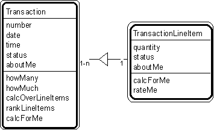

Patt#6. "Transaction - Transaction Line Item" Pattern // transaction patterns

Typical object interactions
- howManyOverInterval --> calcForMe
- howMuchOverInterval --> calcForMe
- calcOverLineItems --> calcForMe
- rankLineItems --> rateMe
Examples
- Transaction: agreement, assignment, authorization, contract, delivery, deposit, incident, inquiry, order, payment, problem, report, purchase, refund, registration, rental, reservation, sale, shift, shipment, subscription, time charge, title, withdrawal.
- Transaction - transaction line item: deposit - deposit line item; order - order line item; payment - payment line item; rental - rental line item; sale - sale line item; shipment - shipment line item; withdrawal - withdrawal line item.
Combinations
Patt#3. "Participant-Transaction"
Patt#4. "Place-Transaction"
Patt#5. "Specific Item - Transaction"
Patt#7. "Transaction - Subsequent Transaction"
Patt#8. "Transaction Line Item - Subsequent Transaction Line Item"
Patt#9. "Item - Line Item"
Patt#10. "Specific Item - Line Item."
Related strategies:
Str#17. "Select Transactions" Strategy
Str#54. "Establish Transaction Attributes" Strategy
Str#76. "Establish Transaction Object Connections" Strategy
Str#96. "Establish Transaction Services" Strategy